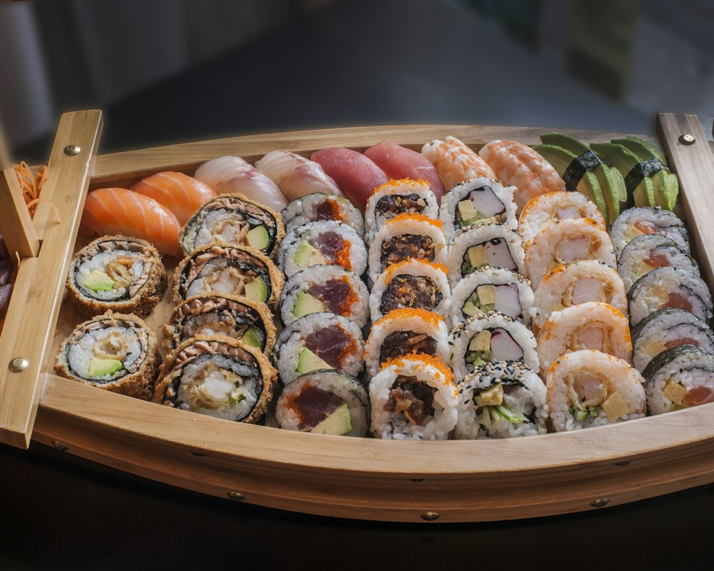
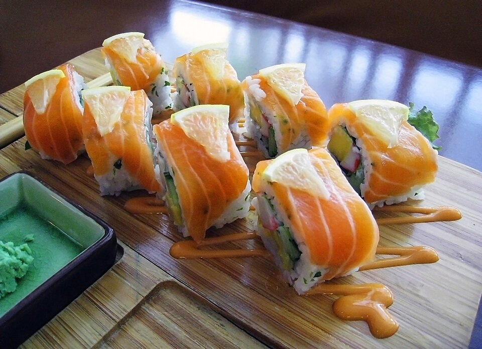
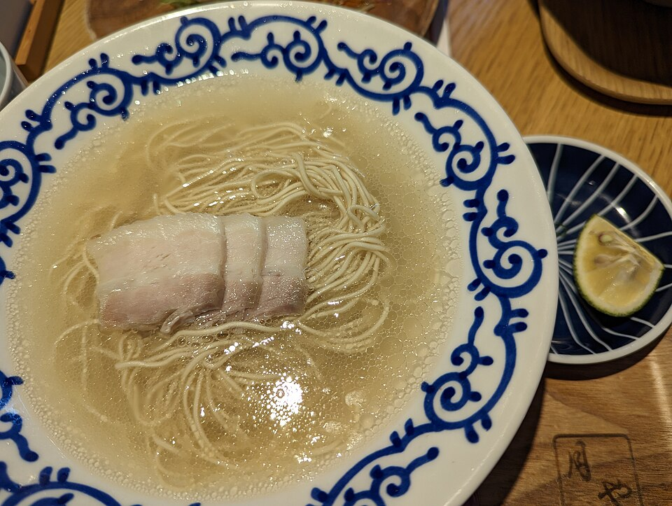
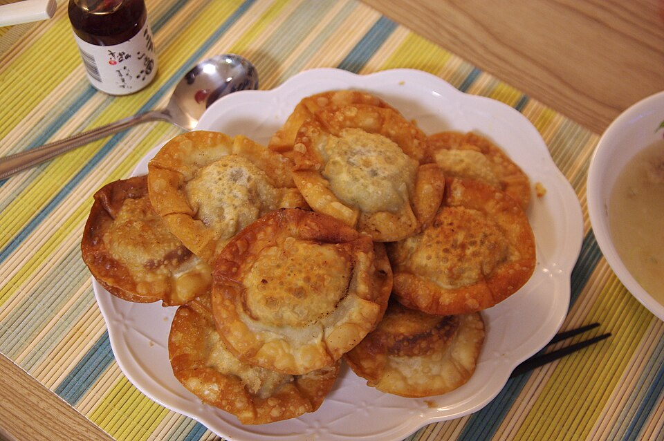
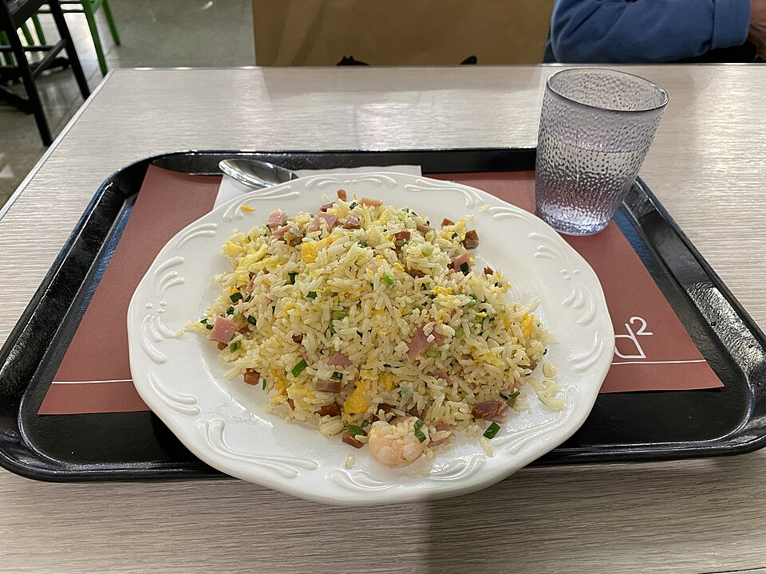
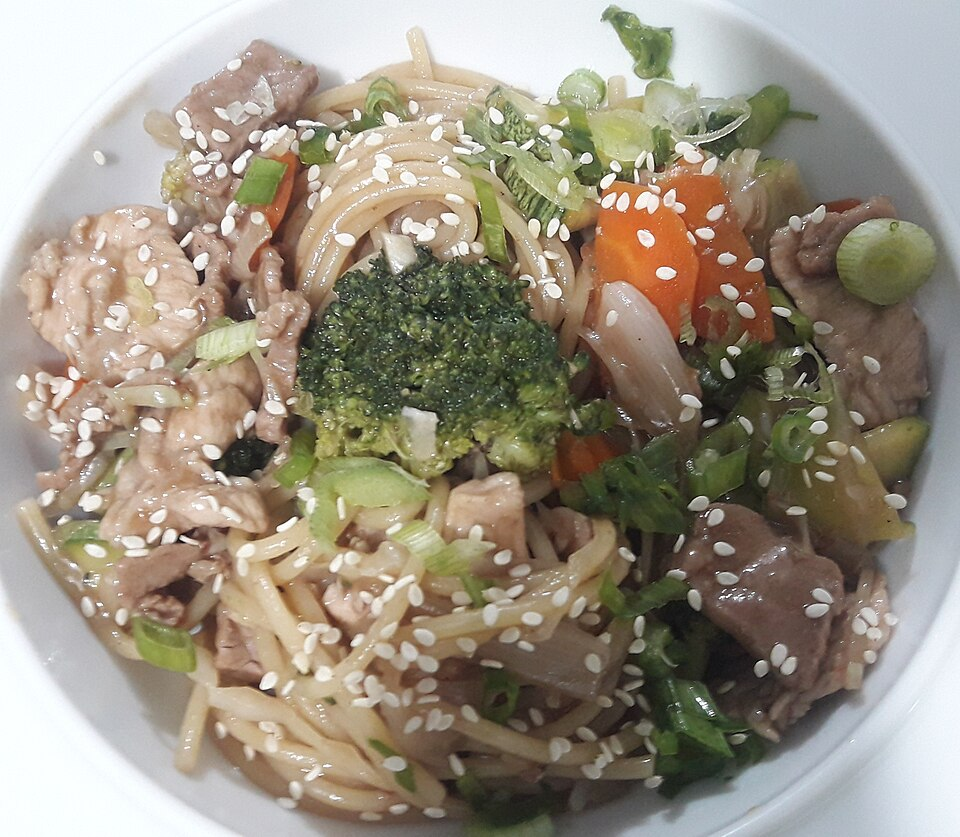
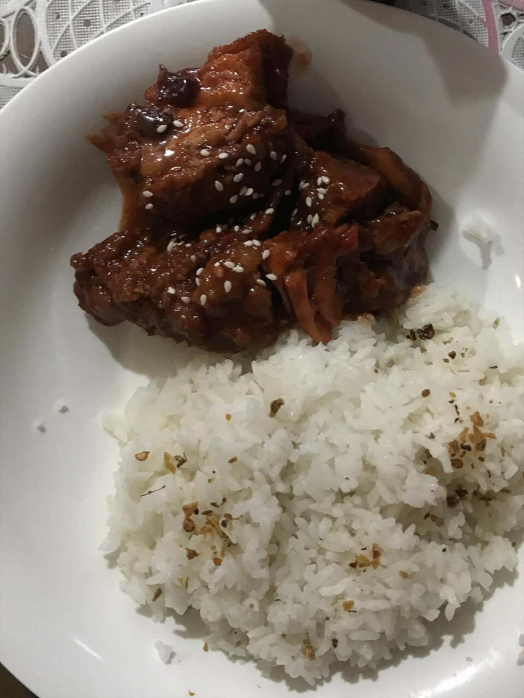
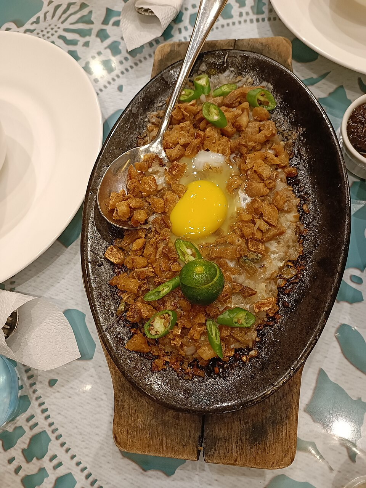
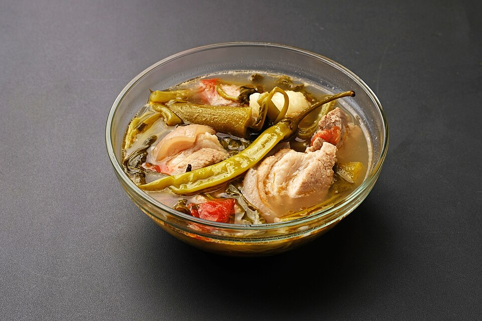
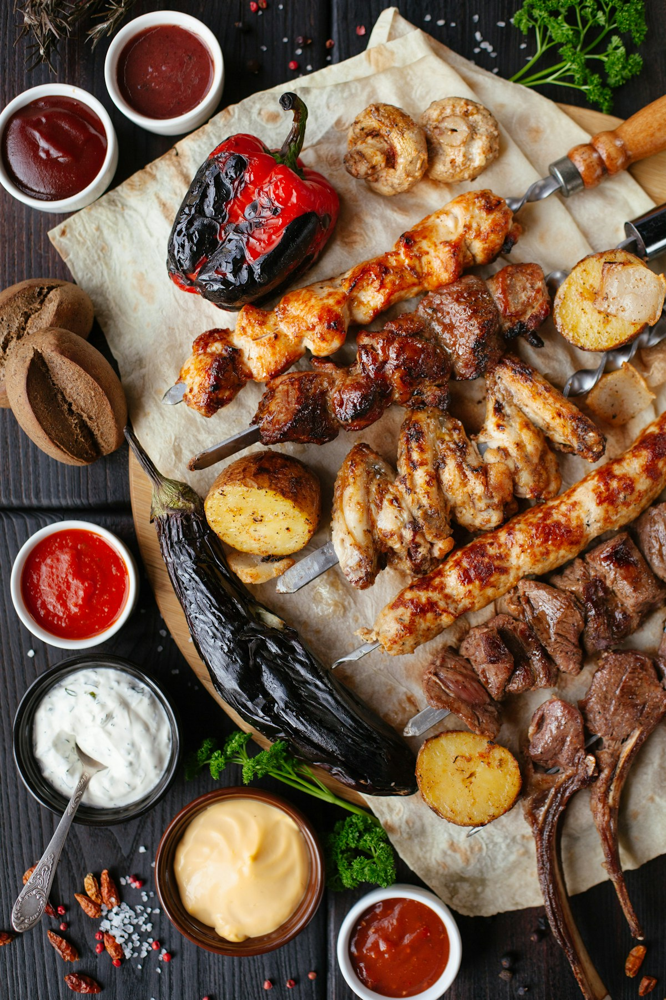

Fresh ingredients
Open-kitchen care, bold sauces, and ingredients chosen for flavor and comfort.
A little taste of everywhere
Japanese favorites, Chinese classics, and Filipino comfort—thoughtfully made and always best shared.

Why we keep returning
From slow-cooked favorites to bright, comforting flavors, every dish is meant to bring people together.
Open-kitchen care, bold sauces, and ingredients chosen for flavor and comfort.
Japanese, Chinese, and Filipino favorites that feel familiar, generous, and heartwarming.
Perfect for quick lunches, catch-ups, small gatherings, and cozy dinners with loved ones.
01 — From our kitchen
Comforting favorites from across Asia, served with a little Lea's Table warmth. What sounds good today?

JAPANESE01Salmon, avocado & a little wasabi kick.

JAPANESE02Slow-simmered broth, noodles, chashu.
 JAPANESE03
JAPANESE03Crisp panko chicken, rice & house sauce.

CHINESE04Juicy pork dumplings, ginger soy dip.

CHINESE05Wok-tossed rice, egg, shrimp & greens.

CHINESE06Wok-charred noodles, crisp seasonal veg.

FILIPINO07Garlicky, peppery, just like home.

FILIPINO08Bright calamansi, chili & crispy edges.

FILIPINO09Tamarind-sour comfort with garden veg.
07 — A few favorites
Three comforting plates we keep coming back to. Add a favorite to your tray and make it a meal.
A slow-simmered bowl for your coziest days.
Wok-tossed comfort, full of color and flavor.
Garlicky, peppery, and always a taste of home.

02 — More than a meal
Big family get-together? Tiny Tuesday treat? We bring a little joy to the everyday, one shared plate at a time.
Gather with us ↗Good things areFood tastes better when
there's a story behind it.